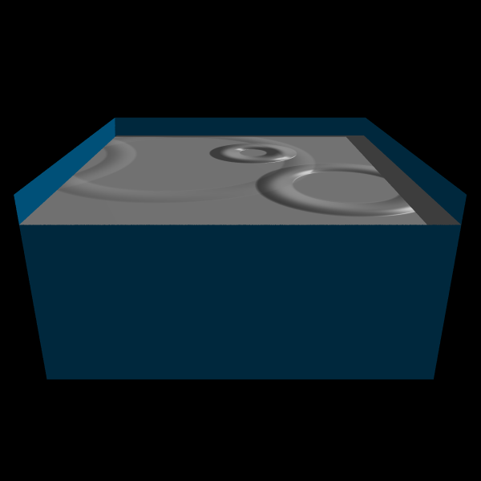

Water Surface
A fairly simple yet visually effective model for the water surface was chosen.
Cosine waves emenating from a point of disturbance propagate outward, diminishing over time.
This gives the effect of a wave-like disturbance on the surface.
These wave disturbances reflect off the sides, as shown below.
The following images were generated by my makewaves program. It represents a top-down view of the surface, with
intensity indicating height. Images were generated for 3 time-steps:
When we put it into the ray-tracer and use the height-values for bump-mapping (coming next), we get the beginnings of
a water surface:
